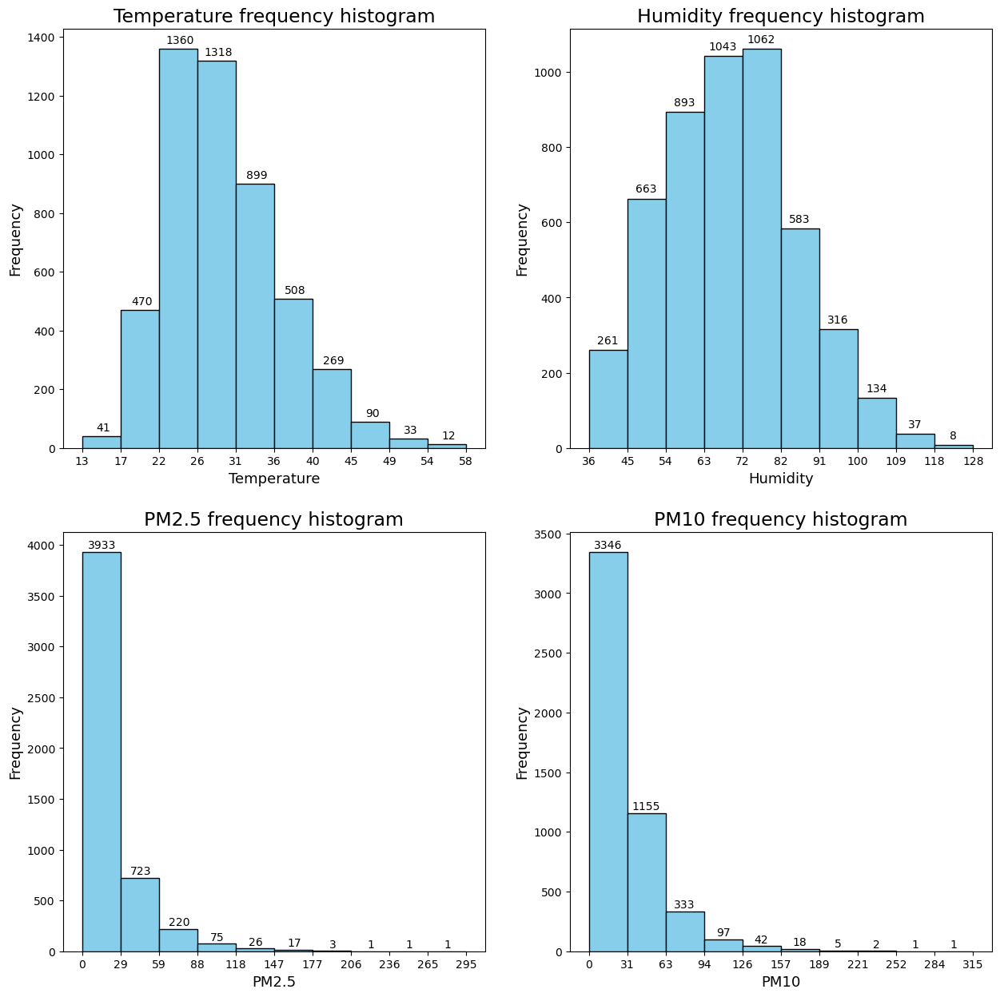
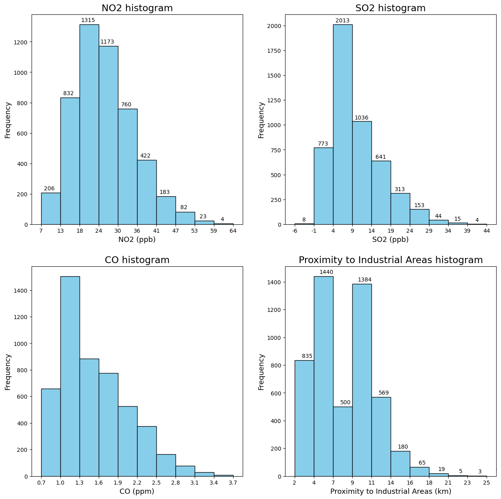

Although K-Nearest Neigbours (KNN) is often regarded as very simple machine learning algorithm, its utility and power are undeniable. It is one of the core algorithms for supervised learning. Simply put, supervised learning is proccess of creating model that can predict a target variable based on input data, using knowledge from dataset where we know the actual values of the target variable. KNN can be effectively used for both classification (target variable can take a limited number of values) and regression (target variable can take on continuous range of values) tasks. The simplest explanation of KNN for classification tasks is that an object is classifed by plurality vote of its k nearest neighbours. For regression tasks, KNN can be generalized so that an object is assigned value that is the average of the values of its k nearest neigbours. However, this is just a basic overview and there are several factors to consider when using KNN to develop an effective machine learning model.
Dataset description
We have chosen Air Quality and Pollution Assesment dataset to show how K-Nearest Neighbours algorithm works. This Dataset is derived from World Health Organization and World Bank Group This Dataset contains several features, in other words, columns, lets go through each one of them and explain what they mean.
Temperature(°C): Average temperature of the region
Humidity (%): Relative humidity recorded in the region
PM2.5 Concentration (µg/m³): Fine particulate matter level
Proximity to Industrial Areas (km): Distance to the nearest industrial zone
Population Density (people/km²): Number of people per square kilometer in the region
Then there is so called Target Variable, thats the variable that we are trying to predict, in our dataset, it is called Air Quality and it can have 4 possible values depending on Air Quality, these values are the following:
Good: Clean air with low pollution levels.
Moderate: Acceptable air quality but with some pollutants present.
Poor: Noticeable pollution that may cause health issues for sensitive groups.
Hazardous: Highly polluted air posing serious health risks to the population.n.
Importing all libraries that will be used
Preprocessing data
As part of data preprocessing we read data from csv file and then we preprocess them. Considering that there are no missing values, there is no need to fill them. All features are already numerical, so there is no need to convert them any further. Target variable can be 4 values, and there is order between those values (it is ordinal categorical datatype), so we convert it into categorical type with order between them. We split data into 3 parts, train, validate and test with train size being 60% of the original dataset and validate and test both being 20% of the original dataset
Code
def preprocess_data(df:pd.DataFrame)->pd.DataFrame:""" Function, for preprocessing data """ qual_category = pd.api.types.CategoricalDtype(categories=['Hazardous', 'Poor', 'Moderate', 'Good'], ordered=True) df['Air Quality'] = df['Air Quality'].astype(qual_category)return df
Code
def read_data(path:str='data/data.csv', y:str='Air Quality',**kwargs)->tuple:""" Function thats read data, and splits them into Train, Validation and Test datasets also separates, target value from others values. --- Attributes: path: [str], path to csv data file y: [str], name of Target value kwargs: options, use seed for random_seed --- Returns: tuple with Train,Validation,Test parametrs set, Target values: Train, Test, Validation """ df = pd.read_csv(path) df = preprocess_data(df)# Split the training dataset into train and rest (default 60% : 40%) Xtrain, Xrest, ytrain, yrest = train_test_split( df.drop(columns=[y]), df[y], test_size=0.4, random_state=kwargs.get('seed',42))# Split the rest of the data into validation dataset and test dataset (default: 24% : 16%) Xtest, Xval, ytest, yval = train_test_split( Xrest, yrest, test_size=0.5, random_state=kwargs.get('seed',42))print(f'Dataset: {path} | Target value: {y} | Seed: {kwargs.get('seed',42)}')return Xtrain, Xtest, Xval, ytrain, ytest, yval
fig, axes = plt.subplots(2, 2, figsize=(15, 15))ax = axes[0,0]# Plot the histogramcounts, bins, patches = ax.hist(df_original["Temperature"], edgecolor="black", color="skyblue")ax.set_xticks(bins) # Use bins directly for edge ticksax.set_xticklabels([int(x) for x in bins])# Set titles and labelsax.set_title("Temperature frequency histogram", fontsize =17)ax.set_xlabel("Temperature", fontsize =13)ax.set_ylabel("Frequency", fontsize =13)for i, count inenumerate(counts): ax.text(bins[i]+2.5, count +10, int(count), ha="center", va="bottom")ax = axes[0,1]# Plot the histogramcounts, bins, patches = ax.hist(df_original["Humidity"], edgecolor="black", color="skyblue")ax.set_xticks(bins) # Use bins directly for edge ticksax.set_xticklabels([int(x) for x in bins])# Set titles and labelsax.set_title("Humidity frequency histogram", fontsize =17)ax.set_xlabel("Humidity", fontsize =13)ax.set_ylabel("Frequency", fontsize =13)for i, count inenumerate(counts): ax.text(bins[i]+4.5, count +10, int(count), ha="center", va="bottom")ax = axes[1,0]# Plot the histogramcounts, bins, patches = ax.hist(df_original["PM2.5"], edgecolor="black", color="skyblue")ax.set_xticks(bins) # Use bins directly for edge ticksax.set_xticklabels([int(x) for x in bins])# Set titles and labelsax.set_title("PM2.5 frequency histogram", fontsize =17)ax.set_xlabel("PM2.5", fontsize =13)ax.set_ylabel("Frequency", fontsize =13)for i, count inenumerate(counts): ax.text(bins[i]+15.5, count +10, int(count), ha="center", va="bottom")ax = axes[1,1]# Plot the histogramcounts, bins, patches = ax.hist(df_original["PM10"], edgecolor="black", color="skyblue")ax.set_xticks(bins) # Use bins directly for edge ticksax.set_xticklabels([int(x) for x in bins])# Set titles and labelsax.set_title("PM10 frequency histogram", fontsize =17)ax.set_xlabel("PM10", fontsize =13)ax.set_ylabel("Frequency", fontsize =13)for i, count inenumerate(counts): ax.text(bins[i]+15.5, count +10, int(count), ha="center", va="bottom")

Code
fig, axes = plt.subplots(2, 2, figsize=(15, 15))ax = axes[0,0]# Plot the histogramcounts, bins, patches = ax.hist(df_original["NO2"], edgecolor="black", color="skyblue")ax.set_xticks(bins) # Use bins directly for edge ticksax.set_xticklabels([int(x) for x in bins])# Set titles and labelsax.set_title("NO2 frequency histogram", fontsize =17)ax.set_xlabel("NO2", fontsize =13)ax.set_ylabel("Frequency", fontsize =13)for i, count inenumerate(counts): ax.text(bins[i]+2.5, count +10, int(count), ha="center", va="bottom")ax = axes[0,1]# Plot the histogramcounts, bins, patches = ax.hist(df_original["SO2"], edgecolor="black", color="skyblue")ax.set_xticks(bins) # Use bins directly for edge ticksax.set_xticklabels([int(x) for x in bins])# Set titles and labelsax.set_title("SO2 frequency histogram", fontsize =17)ax.set_xlabel("SO2", fontsize =13)ax.set_ylabel("Frequency", fontsize =13)for i, count inenumerate(counts): ax.text(bins[i]+2.5, count +10, int(count), ha="center", va="bottom")ax = axes[1,0]# Plot the histogramcounts, bins, patches = ax.hist(df_original["CO"], edgecolor="black", color="skyblue")ax.set_xticks(bins) # Use bins directly for edge ticksax.set_xticklabels([f'{x:.1f}'for x in bins]) # Set titles and labelsax.set_title("CO frequency histogram", fontsize =17)ax.set_xlabel("CO", fontsize =13)ax.set_ylabel("Frequency", fontsize =13)for i, count inenumerate(counts): ax.text(bins[i]+4.5, count +10, int(count), ha="center", va="bottom")ax = axes[1,1]# Plot the histogramcounts, bins, patches = ax.hist(df_original["Proximity_to_Industrial_Areas"], edgecolor="black", color="skyblue")ax.set_xticks(bins) # Use bins directly for edge ticksax.set_xticklabels([int(x) for x in bins])# Set titles and labelsax.set_title("Proximity to Industrial Areas frequency histogram", fontsize =17)ax.set_xlabel("Proximity to Industrial Areas", fontsize =13)ax.set_ylabel("Frequency", fontsize =13)for i, count inenumerate(counts): ax.text(bins[i]+1.5, count +10, int(count), ha="center", va="bottom")

Code
fig, axes = plt.subplots(2, 2, figsize=(15, 15))ax = axes[0,0]# Plot the histogramcounts, bins, patches = ax.hist(df_original["Population_Density"], edgecolor="black", color="skyblue")ax.set_xticks(bins) # Use bins directly for edge ticksax.set_xticklabels([int(x) for x in bins])# Set titles and labelsax.set_title("Population Density frequency histogram", fontsize =17)ax.set_xlabel("Population Density", fontsize =13)ax.set_ylabel("Frequency", fontsize =13)for i, count inenumerate(counts): ax.text(bins[i]+28.5, count +10, int(count), ha="center", va="bottom")axes[0,1].set_visible(False)axes[1,1].set_visible(False)axes[1,0].set_visible(False)
Code
def train_model(*args,**kwargs):"""Function, that trains model with specific paraketrs, defined in kwargs. --- Attributes: *args: Xtrain,Ytrain **kwargs: options for training model --- Return: trained model """ X = args[0] y = args[1]return KNeighborsClassifier(**kwargs).fit(X,y)
fig, ax = plt.subplots(figsize=(15,5))ax.set_title("Model accuracy on Training and Validating datasets based on hyperparameter index", fontsize=17)ax.plot(train_acc,'or-')ax.plot(val_acc,'ob-')ax.set_xlabel('Hyperparameter index', fontsize=13)ax.set_ylabel('Accuracy', fontsize=13)ax.legend(['Train', 'Validate'])